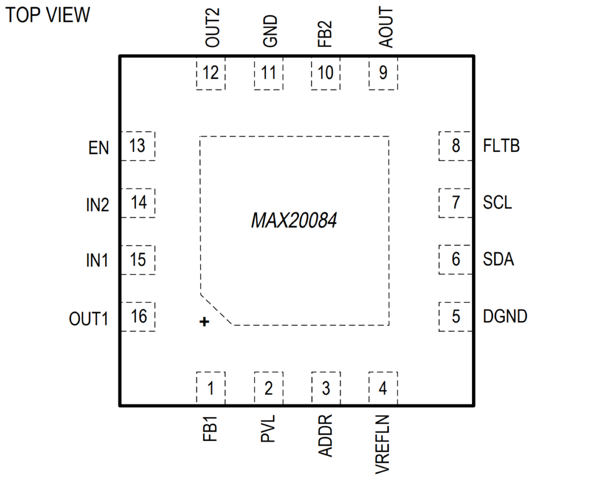

MAX20084

Pin Description
| PIN | NAME | FUNCTION |
|---|---|---|
| 1 | FB1 | Feedback Connection for the OUT1 Output. Connect FB1 to OUT1. |
| 2 | PVL | 5V Regulator Output. Bypass PVL to GND with a minimum of 1μF ceramic capacitor as close as possible to the device. |
| 3 | ADDR | I2C Address Setting. Connect to PVL or GND to set address. See Table 1. |
| 4 | VREFLN | Internal Reference. Bypass VREFLN to GND with a 100nF ceramic capacitor. |
| 5 | DGND | Digital Ground. Connect DGND directly to the exposed pad of the package. |
| 6 | SDA | I2C Data I/O. Connect a pullup resistor from SDA to the logic supply. |
| 7 | SCL | I2C Clock Input. Connect a pullup resistor from SCL to the logic supply. |
| 8 | FLTB | Open-Drain, Active-Low Fault Output. FLTB asserts low when any diagnostic bit is asserted if it is not masked. Connect a pullup resistor from FLTB to the logic supply. |
| 9 | AOUT | Analog Output. AOUT outputs a voltage that represents the load current of the selected output OUT1 or OUT2. An internal multiplexer controlled through I2C sets the selected channel for AOUT. If AOUT is used, place a 100kΩ resistor and a 220pF capacitor from the pin to GND. |
| 10 | FB2 | Feedback Connection for the OUT2 Output. Connect FB2 to OUT2. |
| 11 | GND | Ground. GND is the current return path connection for the low-noise analog signals. Connect GND to the exposed pad of the package. |
| 12 | OUT2 | Regulator Output 2. Connect a capacitor with a minimum value of 10μF from OUT2 to PGND, placing it as close as possible to the IC. A protection diode can also be used to protect OUT2 from negative voltage transients. |
| 13 | EN | Main Enable Input for the MAX20084. When EN is goes high, the internal PVL regulator is enabled and the I2C interface becomes active. In the case of the MAX20084ATEB, LDO1 is also enabled with the default configuration when EN is goes high. EN has an internal pulldown resistor. |
| 14 | IN2 | Supply Input. Connect IN2 and IN1 together directly at the IC. |
| 15 | IN1 | Main Supply Input. Connect a 4.5V to 18V supply to IN1. Bypass IN1 to GND with a combination of ceramic capacitor of value 4.7µF and optionally an electrolytic capacitor. See the Short-to-Battery and Reverse-Current Protection section. Connect IN1 and IN2 together directly at the IC. |
| 16 | OUT1 | Regulator Output 1. Connect a capacitor with a minimum value of 10μF from OUT1 to GND, placing it as close as possible to the IC. A protection diode can also be used to protect OUT1 from negative voltage transients |
| - | EP | Exposed Pad. Connect EP to a large-area contiguous copper ground plane for effective power dissipation. Do not use as the IC ground connection. EP must be connected to ground. |